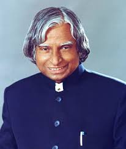

A.P.J Abdul Kalam
1931-2015
missile man of India
A.P.J. Abdul Kalam (born October 15, 1931, Rameswaram, India—died July 27, 2015, Shillong) was an Indian scientist and politician who played a leading role in the development of India’s missile and nuclear weapons programs. He was president of India from 2002 to 2007. His scientific achievements and popularity gained him the epithets “Missile Man” and “People’s President.”
Biography
- born: 15th October 1931,in Rameshwar
- Award:Bharta ratna,Versavarkar Award,padma
- Full name:Avvul pakir jalnulabdeen abdul kalam
- Education:madars institute of science of technology.anna
- parents:janinulabidin marakayar,mother:Ashiamma juninulabedin